Quantas With A Couple Of Features Added
Quantas (Oglio et al. 2022) was lacking functionality to implement Byzantine behaviors.
My goal was to add Byzantine behaviors that would:
Write code that modifies the Peer code at runtime.
I call this code an “infection.”
Assumption: Every language can modify its code at runtime. Even assembly language can do this.
No doubt C++ can do this too.
It turns out C++ can not do this.
C++ is not reflective.
class Infection {
public:
Infection(function<void(Peer<type_msg>*,function<void()>)> fn) : _infection(fn) {}
Infection(function<void(Peer<type_msg>*)> fn) : _fn(fn) {}
/** An infection is a higher-order functor:
*
* @param the peer that we are performing computation on
* @param the original performComputation function
* @return a modified version of performComputation
*/
void operator()(Peer<type_msg>* peer, function<void()> performComputation) {
if (_infection != nullptr)
_infection(peer, performComputation);
else
_fn(peer, performComputation);
}
private:
function<void(Peer<type_msg>*,function<void()>)> _infection;
function<void(Peer<type_msg>*)> _fn;
};
Infections were originally implemented as higher-order functors (see Infections as higher-order functors), but now they are simply functions that accept a Peer as argument and modify the methods of that peer. To achieve this, new function pointers were added to Peer that wrap existing functionality.
I created a Python script that will automatically generate plots based on Quantas’ JSON output. In the future, it would make sense to have Python generate the JSON input also, as that is cumbersome (see Move JSON input out of Quantas repository).
I factored out my new code for visualizing results into a git supermodule, meaning that it is a git repository that will contain Quantas as a submodule. This layer of abstraction allows both Quantas developers and end-users to fork the visualization repository and make changes to that without those changes being intertwined with the changes to Quantas itself.
Once both Quantas and the visualization repository are both stable after this flurry of activity, I plan to add Quantas as a submodule to the visualization repository.
latency is not updated if commits do not occur. This caused some problems as you can see in Results. Nghia switched to throughput-based benchmarking, which seems to work more smoothly. See Simplify logging: log everything for ideas for further improvements.
multicast for specified proportion of peers
I improved upon Rachel Bricker’s randomMulticast that sends messages to a random number of peers. There is now an optional parameter to specify the proportion of peers you would like to send a message to.
// Multicasts to a random sample of neighbors without repetition.
// Sample size is a random uniform distribution between 0 and neighbours
template <class message>
void NetworkInterface<message>::randomMulticast(message msg) {
randomMulticast(msg, -1);
}
// Same, but sample size is number of neighbours * p, rounded down.
template <class message>
void NetworkInterface<message>::randomMulticast(message msg, float p) {
int amountOfNeighbors;
if (p < 0)
amountOfNeighbors = uniformInt(0, _neighbors.size());
else
amountOfNeighbors = _neighbors.size() * p;
// previous implementation
}
.txt → .jsonThis makes it more obvious what format the output is in. Thanks to Mitch for the suggestion.
Fix all whitespace errors and set up automatic linting using a git pre-commit hook.
In my first implementation, I created an Infection class which created higher-order functors, but this seemed to introduce complexity for no benefit. I switched Infections to simply being functions that accept callbacks instead.
#include <functional>
#include "Peer.hpp"
using std::function;
namespace quantas {
template<class type_msg>
class Infection {
function<void(Peer<type_msg>*,function<void()>)> _infection;
// allow infections that don't take performComputation as an argument
function<void(Peer<type_msg>*)> _fn;
public:
Infection(function<void(Peer<type_msg>*,function<void()>)> fn) :
_infection(fn) {}
Infection(function<void(Peer<type_msg>*)> fn) : _fn(fn) {}
/**
* An infection is a higher-order functor:
*
* @param the peer that we are performing computation on
* @param the original performComputation function
* @return a modified version of performComputation
*/
void operator()(Peer<type_msg>* peer, function<void()> performComputation) {
if (_infection != nullptr)
_infection(peer, performComputation);
else
_fn(peer, performComputation);
}
};
}
My next approach was to code an infection as replacement methods that would accept, as a callback, the original method that it would replace. I abandoned this approach in favor of infections as functions that modify a peer. This seems to be the most natural approach, and one that is intuitively easy to explain.
Unless stated otherwise, 1,000 simulations were run using PBFTPeer for both the control case (where all peers are correct indefinitely) and the Byzantine case (where peers are infected at time 200). All simulations were run with a delay of 10.
| Plot symbol | Meaning |
|---|---|
| Semi-transparent blue dot | Results of a simulation of all-correct peers |
| Semi-transparent red dot | Results of a simulation including “infected” peers |
| Blue shaded region | 95% confidence interval |
| Red shaded region | 95% confidence interval |
I began by using a crash infection that simply halts a peer and the pre-programmed latency log of the PBFTPeer. Latency is a self-report from peer 0 of the time since the last commit. This has the drawback that it logs average cumulative latency. Hence the output plot is not trivial to interpret: sudden jumps in latency appear as a transition from a constant function to a hyperbolic one, which is exactly what we see below.
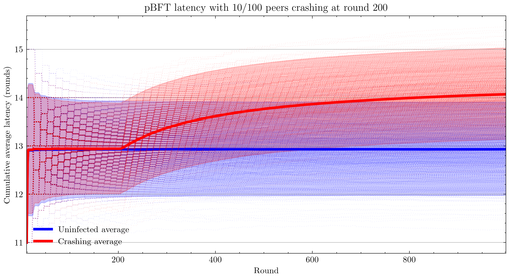 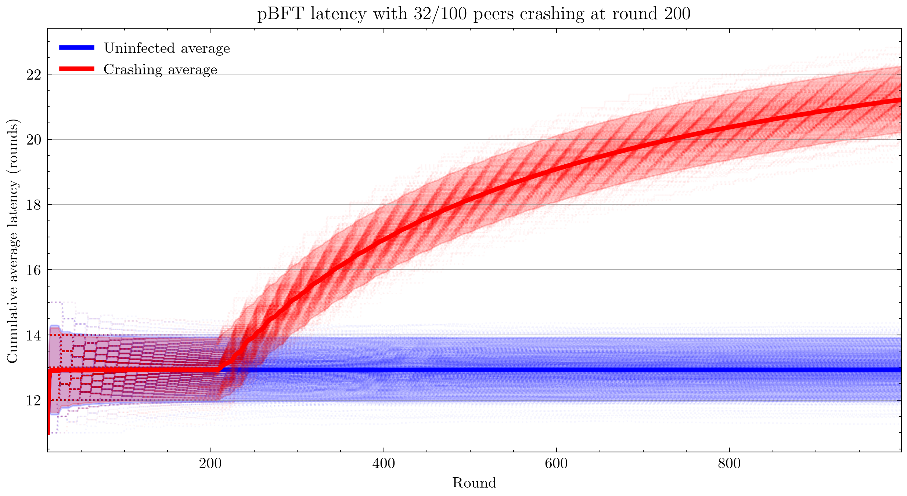
Note that the patterns you see are not plotting artifacts, they are the actual cumulative averages of each simulation. Cumulative averaging of integral changes results in the hyperbolic geometry that you see.
Next, I switched to measuring throughput, which is the total number of commits that have occurred (according to peer 0).
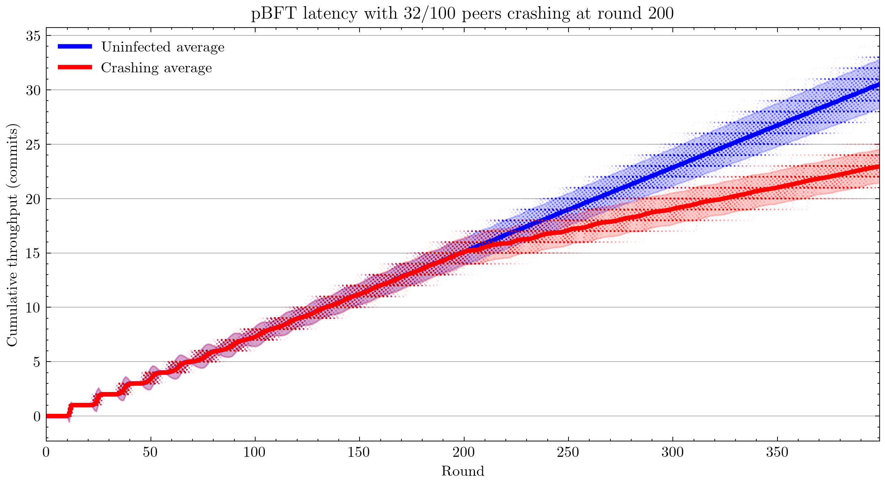
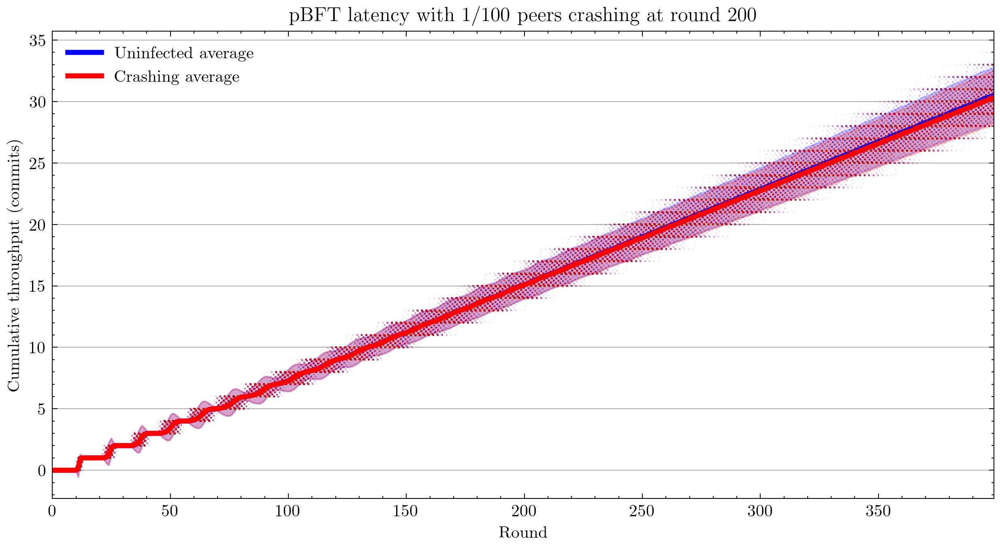
Using 100 simulations instead of 1,000: 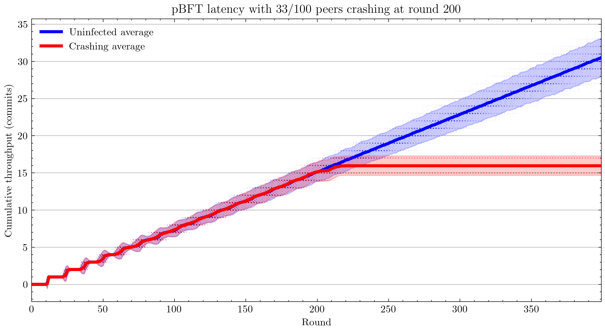 Interestingly, we see that pBFT is failing for 33/100 nodes crashing. This is surprising because this is the most benign kind of fault and pBFT is designed to handle \(\frac{n-1}{3}\) faults, where \(n\) is the number of peers(Castro and Liskov 1999).
Note: From this point forward, all plots are with 12 simulations for each of control and infected cases.
Applying censorship resulted in no statistically significant change in throughput up to 99/100 nodes. Censoring the final node caused the system to fail. This could be related to view changes not being implemented. As the code is written now, peer 0 is hard-coded to be the view leader, and my code infects nodes in reverse order, leaving peer 0 until last (the reason for this is peer 0 is also conventionally the node that handles logging).
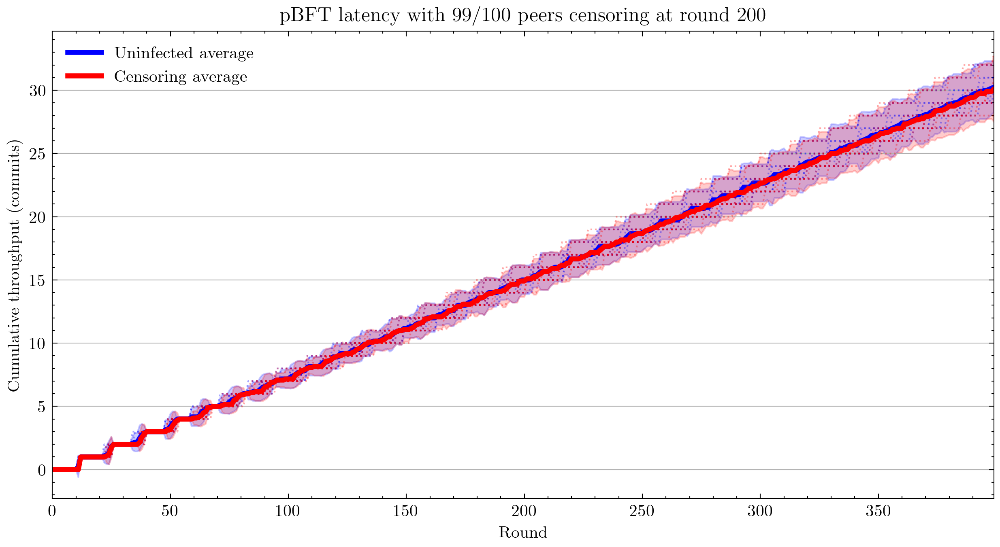 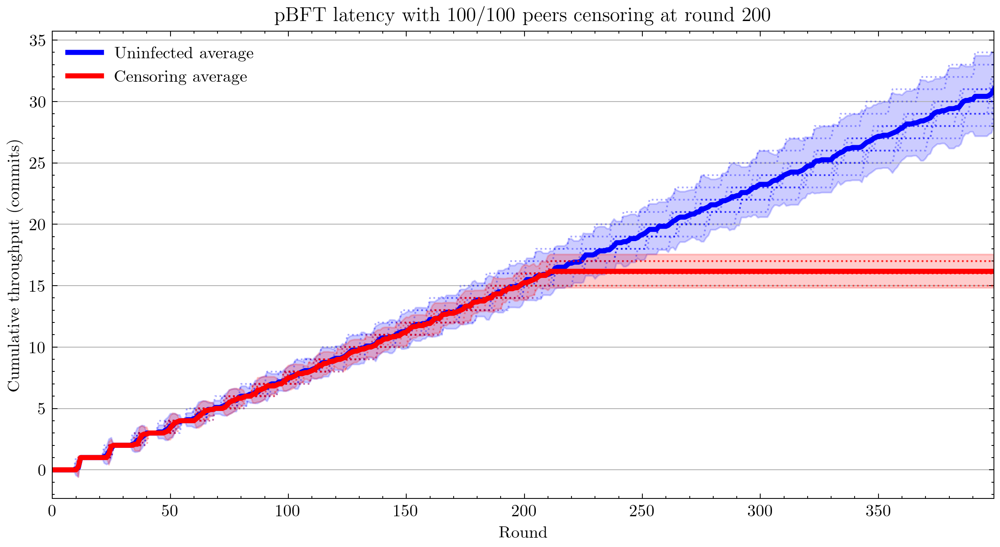
Next I tested equivocating on the commit message by sending the commit to a random selection of peers (see Add multicast for specified proportion of peers) and not sending it to the rest. With more than 45 equivocating peers, this began to slow down the network drastically.
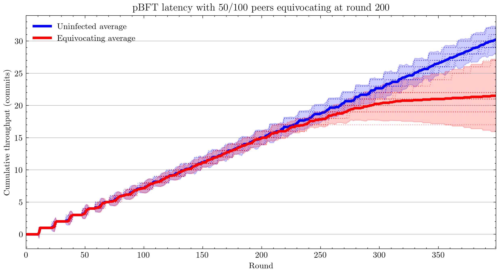 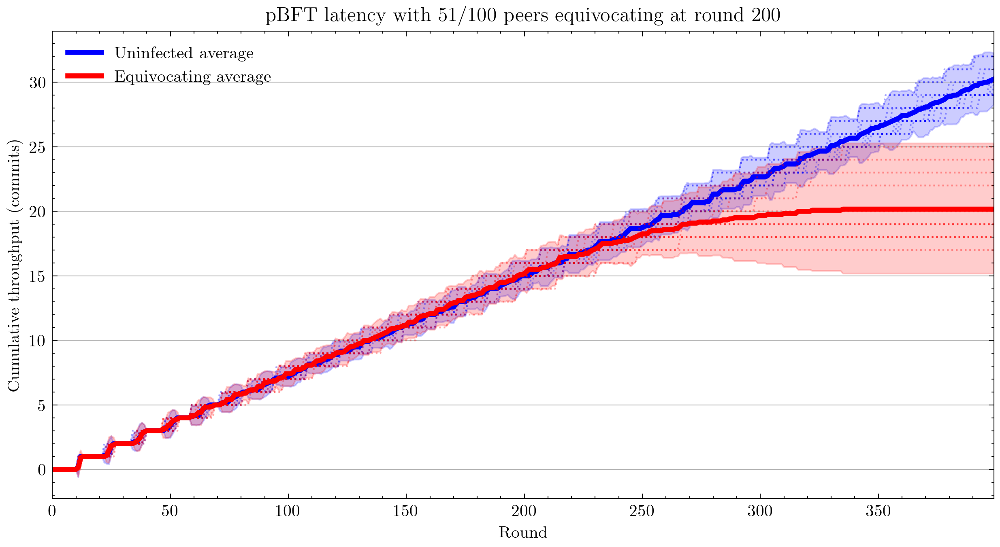
[&] an appropriate way to capture this?std::function<void(message)> send = [&] (message msg) {
NetworkInterface<message>::broadcast(msg);
};
this best practice?virtual void defaultComputation () = 0;
std::function<void(Peer*)> computationPerformer = [] (Peer* peer) {
peer->defaultComputation();
};
void performComputation () { computationPerformer(this); };
Is looping over _neighbours in the below code necessary, or can it be removed? Is there any reason sending a message with a target that doesn’t exist would cause issues?
// Send to a single designated neighbor
template <class message>
void NetworkInterface<message>::unicastTo(message msg, long dest){
for(auto it = _neighbors.begin(); it != _neighbors.end(); it++){
if(*it == dest) {
Packet<message> outPacket = Packet<message>(-1);
outPacket.setSource(id());
outPacket.setTarget(*it);
outPacket.setMessage(msg);
_outStream.push_back(outPacket);
}
}
}
stdin
The convention with Unix-style programs is to use program - to mean: Instead of reading from the file represented by the first argument, read from stdin instead. This will make it more convenient for programs that use Quantas to feed it JSON they generated. Instead of writing a file and giving that to Quantas, or passing a file by file descriptor, which is not portable, programs will have the third option of passing data via stdin.
It is not conventional to store the input to a program in the same repository as the code for that program. I suggest removing the Makefile entries for different program inputs and moving the JSON input files into the supermodule, Quantas-analysis. This allows end-users to develop version-control their own analysis independently of Quantas core development, allowing seamless updates of Quantas.
If we are able to refactor Quantas in a way that we never subscript peers before they are randomly shuffled, it could provide benefits to user by allowing people to hack on Quantas more easily. For example, when I first started building Byzantine peers, I found it more convenient to make the first X peers Byzantine. This is only a safe approach if nothing else in the codebase picks a range of peers deterministically. Unfortunately for me, _peers[0] is hard-coded as indispensable.
_peers[0]->endOfRound(_peers);
First, I created results to keep all of my results in one place. Then I created various subdirectories to manage results for different parameters. Then I modified Quantas and moved results to old/results0 because I wanted to keep a copy of the results from before I modified Quantas. It would be better if Quantas handles all of this administrative work.
We could do this simply by storing results in e.g.
results/v1.0/pBFT/delay10/rounds400/peers100/infect10. This seems like a convoluted way of doing things, but it actually reduced duplication of computation while experimenting with Quantas. A user may want to try many different approaches before deciding on the one they want to present, by which point their output files have become an organizational nightmare. This would also eliminate the chance of user error in naming the output files; currently it is easy to set rounds: 400 in the config file, but forget to change the output filename to reflect that parameter.
This approach could be taken even further to eliminate JSON input files altogether and have the entire input state represented in the filepath. This would allow us to avoid accidental duplication of work by checking the mtime on the files, like make does. A hybrid option would also be possible, where a JSON file exists in pBFT/ and those options are added to all simulations.
When I first created a way to infect nodes, I hard-coded into Simulation.hpp I then moved this functionality into the config file, but if we keep doing this for every feature, the complexity of the config files will balloon. It might be better to make the config files Turing-complete, i.e. make a DSL.
I expect that making a DSL will lead to simplifications of Quantas and could even allow techniques from compiler optimization to be used to speed up Quantas.
Note that a DSL is not compatible with the previous suggestion to move all configuration to the file path, but it is compatible with the hybrid approach of storing some configuration in the file path.
At the moment, logging is done from the perspective of one peer only.
GitHub displays notices at the top of the Quantas repository:
forked from khood5/distributed-consensus-abstract-simulator
This branch is 124 commits ahead of khood5:master.
This gives the impression that QuantasSupport/Quantas is not the canonical source for Quantas. This can be easily fixed by contacting GitHub customer support.
Having QuantasSupport registered as a user rather than an organization and then using that anonymous account to commit to the repository is highly irregular. This can cause community trust issues due to not knowing which individuals authored each part of the project. Quantas contributors should be informed that using a full name for FOSS contributions is the norm.
The Quantas repository can be moved under an organization, such as QuntasSim in a way that automatically redirects QuantasSupport/Quantas → QuantasSim/Quantas.
Use tags. Create a banner for the repository. Create a logo.
The way logging is currently done could be simplified: We could simply log every event and the time at which it occurred. Currently, pBFT outputs a time-series of throughputs, which is very easy to work with, but it is not the natural format for this data. We have a number of different events occurring on different rounds. If we were to simply record pairs (time, event) that would allow more flexibility when it comes to analyzing the data. The parsing is more complex than a time series, but libraries exist that will handle that for you. This avoids having to modify the code for the computation and re-run the simulation, which is expensive.
Once I had a working visualization system, I would use that after each change I made. I would visually check that the plot generated looked the same as the previous one to ensure I hadn’t made any coding errors. It would be better to automate this. You could have both a light test suite, to briefly check correctness before each commit, and a more extensive test suite that runs automatically on GitHub when a pull request is submitted.
We could use Latin hypercube sampling to reduce the number of tests needed for a desired precision. With LHS, Precision is proportional to \(1/n\) instead of \(1/\sqrt{n}\). LHS is an extension of stratification that works by replacing each type of random decision with a dimension in a Latin Hypercube. This may be problematic in our case, though, as generation of high-dimensional Latin hypercubes is hard. One solution is dimensionality reduction: Pick only your most correlated categories of decisions and use LHS for those categories, while using random number generation for the rest. (Damblin, Couplet, and Iooss 2013)
A simpler solution may be to replace most instances of pseudorandom number generators with quasirandom number generators. QRNGs produce low-discrepancy sequences that increase uniformity of the resultant sequence.
An infection is a function that modifies a peer.
Infections can be specified in the config file.
An “infected” node is simply a node with modified behavior. It is no longer guaranteed to be correct, but it may be correct.
Old:
virtual void performComputation() = 0;
New:
virtual void defaultComputation() = 0;
auto computationPerformer = [] (Peer* peer)
{ peer->defaultComputation(); };
void performComputation()
{ computationPerformer(this); };
template<class type_msg>
map<string, function<void(Peer<type_msg>* peer)>> infection = {
{ "crash", [](Peer<type_msg>* peer) {
peer->computationPerformer = [](Peer<type_msg>* peer) {};
} },
{ "censor", [](Peer<type_msg>* peer) {
peer->submitTransPerformer = [](Peer<type_msg>* peer, int tranID) {};
} },
{ "equivocate", [](Peer<type_msg>* peer) {
peer->sendMsg = [](Peer<type_msg>* peer, type_msg msg)
{ peer->NetworkInterface<type_msg>::randomMulticast(msg); };
} }
}
.
.
.
"infectPeersAtRound": 200,
"numberOfPeersToInfect": 32,
"infectionType": "equivocate",
.
.
.
Crashing, censoring, and equivocating, were all tested. Plots showing throughput over time are in Proof of Work.
Equivocating was tested in the trivial case that a peer sends a correct message to some nodes and no message to the rest.
(The details are moot because Quantas does not handle simulating DoS.)
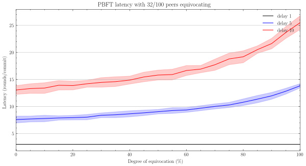
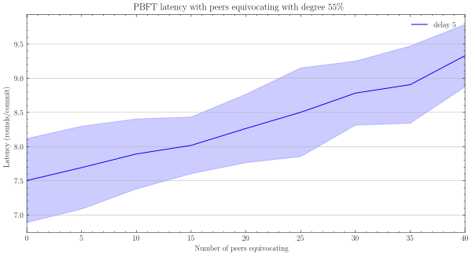
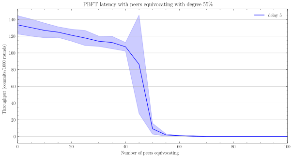
| Symbol | Meaning |
|---|---|
| Latency | The number of rounds to confirm a commit |
| Degree of equivocation | % of peers that are not sent a correct message |
| Black line | Latency averaged over 1000 rounds × 20 simulations |
| Red shaded region | 95% confidence interval |